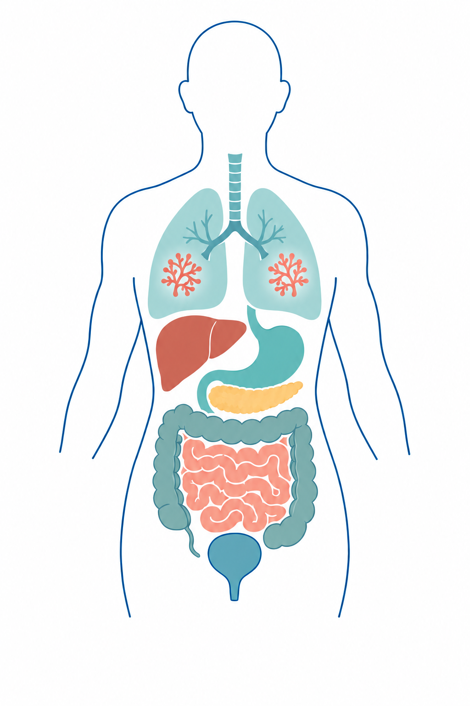

ORGAN ATLAS

Inside the tumor.
A microbial world.
Explore the microbes within tumors, from tissue localization to immunity and metabolism.
Hover over a point to see the organ and paper count. Pan-cancer and lower-volume organs have dedicated grouped views.